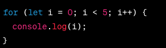
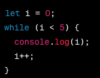
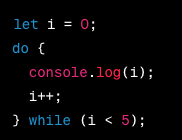
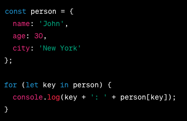

ineration refer to the act of repeating.
in JavaScript, iteration referes to the process of repeated executing a block of code unit certain condition met
there are many way to perform ineration in javascript
for loop: it has a initializaiton statement, a codition, update statement, and code to be exectuted.

initializaiotn i start from zero, condition (i should not be equal or more than 5), post icrement operator ++1 (it means on every loop the initializaiotn is getting add by 1), the code will run inside the curly bracket as long condition is not end. i++ is short for i = i + 1 or i += 1.
while loop: the code will be running as long as condition is not end.

while loop is shorter way to for loop. they both do the same job.
do-while loop: similar to the while loop, the code will be running as long the condition is true.

however, in do-while loop, condition is getting check everytime after each iteration.
for...in loop: the for...in loop repeat over the properties of an object. and return or retreive keys of the object and allow to perform action on each property.

for...of loop: the for...of loop is ued to repeat over iterable object such array, string or other dada structure.